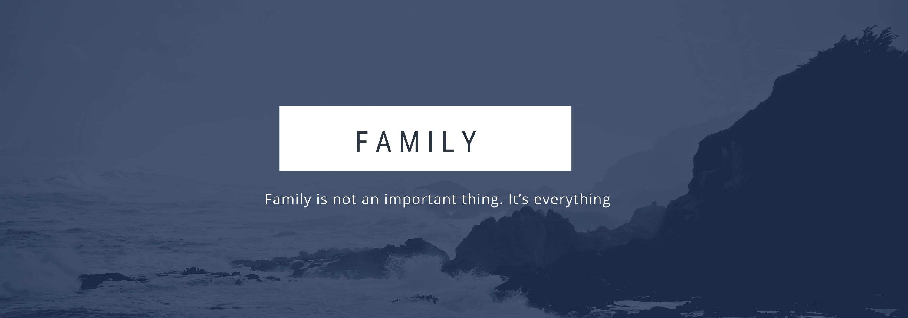
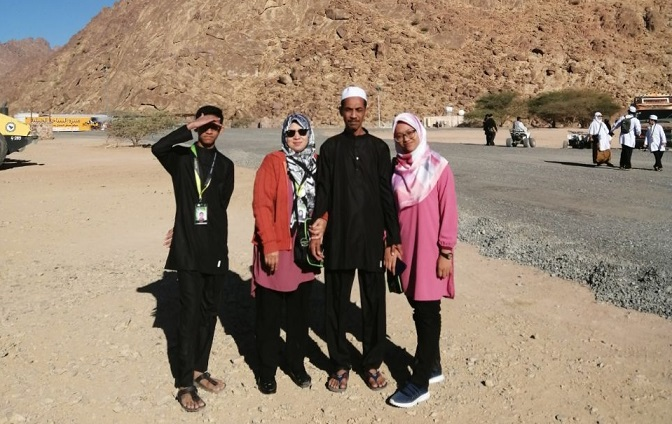
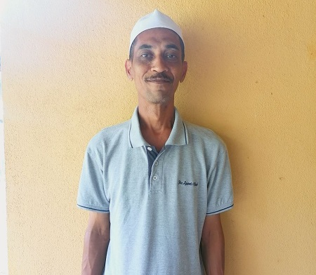
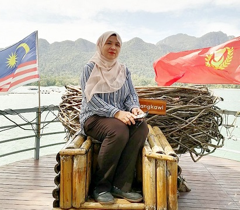
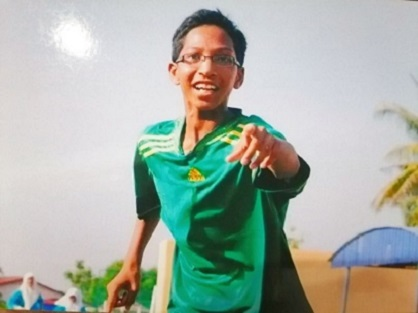
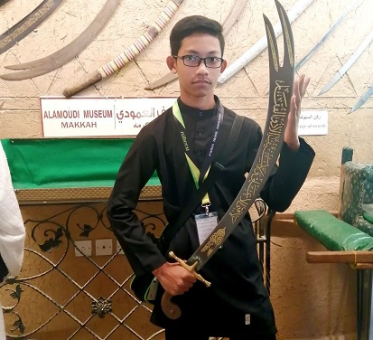

This is one of the most
precious picture of my small family. There is my father, my mother, my younger brother and of course however
without my older brother. This picture was taken in December 2019 which is exactly one year ago at
Jabal Magnet, Medina when we were performing Umrah together. Jabal Magnet is literally one of my
favourite location at Medina because there are so much activities to do such as atv drive and Jabal Magnet
has its own miracle which its has magnet on road so the vechile doesn't need to use gear and others.
💕 Families are the compass that guides us.
They are the inspiration to reach great heights, and our comfort when we occasionally falter.
Because, where there is family, there is love 💕
MY BELOVED FAMILY
MY FATHER
|
| NAME |
SHUIB BIN HUSSAIN |
 |
| AGE |
51 YEARS OLD |
| DATE OF BIRTH |
13TH MARCH 1969 |
| PLACE OF BIRTH |
LANGKAWI |
| OCCUPATION |
MAINTENANCE MANAGER |
| WORK PLACE |
ASEANIA RESORT AND SPA LANGKAWI |
| SIBLINGS |
5th FROM 6 SIBLINGS |
|
My father is a reliable, confident
and full of love for his family. He often
advised his children with gentle words but
he was also firm in educating his children in
religious chapters especially involving prayer.
My father also often told us that if there
was a need to buy, he would try to meets
everything. I love my father so much!
|
MY MOTHER
|
| NAME |
UMI KALSOM BINTI MD HANAFIAH |
 |
| AGE |
45 YEARS OLD |
| DATE OF BIRTH |
21TH NOVEMBER 1975 |
| PLACE OF BIRTH |
HOSPITAL JITRA |
| OCCUPATION |
HOUSEWIFE |
| SIBLINGS |
4th FROM 6 SIBLINGS |
|
My mother is a very loving and caring
person to her children. She will ensure
that every need of her children is well met
and is always there to advise us. My
mother is a person who cares about children's
education but never pushes us to get good results
because for her, every results that we got is the
result of our hard work and will always praise
our efforts as well as motivate us to try harder.
|
MY OLDER BROTHER
|
| NAME |
MUHAMMAD BADARUDDIN BIN SHUIB |
 |
| AGE |
24 YEARS OLD |
| DATE OF BIRTH |
1ST NOVEMBER 1996 |
| PLACE OF BIRTH |
HOSPITAL JITRA |
| DATE OF PASSED AWAY |
14TH FEBRUARY 2014 |
| REASON OF PASSED AWAY |
ACCIDENT WHILE ON THE WAY TO PART TIME WORK |
| SIBLINGS |
1st FROM 3 SIBLINGS |
|
My oldest brother is a reliable brother, he is a teaser
but he will take action if his siblings are in trouble.
He has the characteristics of the eldest son who give in
over his younger siblings. He passed away 6 years ago
due to the motorcycle accident because of irresponsible
road improvements caused my brother could not be saved.
|
MY YOUNGER BROTHER
|
| NAME |
MUHAMMAD BADRIUDDIN BIN SHUIB |
 |
| AGE |
16 YEARS OLD |
| DATE OF BIRTH |
23TH JULY 2004 |
| PLACE OF BIRTH |
HOSPITAL LANGKAWI |
| OCCUPATION |
STUDENT |
| FORM |
4 |
| SCHOOL |
MAKTAB RENDAH SAINS MARA LANGKAWI |
| SIBLINGS |
3rd FROM 3 SIBLINGS |
|
My younger brother has the characteristics of the
youngest one because he is spoiled when with family
but charismatic when with his friends at school and dormitory.
My younger brother is a comfort in the family because he
looks like a brother and also has characterics like my
brother. My younger brother sometimes has its own matured
but sometimes he just a youngest child in family but I love him.
|

MUSIC BACKGROUD: BUTTERFLY;THE BOYZ (INSTRUMENTAL)
COPYRIGHT© SYAZA PERSONAL WEBSITE; FLATICON.COM; CANVA.COM;